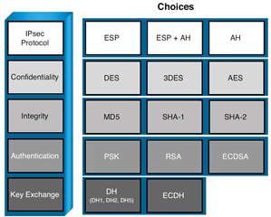
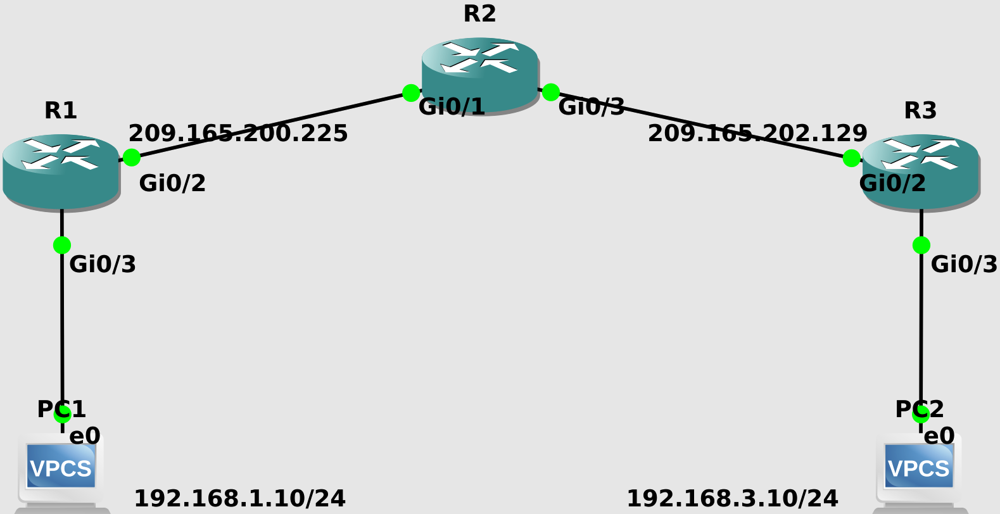

Site-to-site IPsec VPN
Core Concepts
- Data Confidentiality: Data cannot be intercepted by a hacker.
- Symmetric Encryption (DES, 3DES, AES, …)
- Asymmetric Encryption (RSA, DH, …)
- private key
- public key
- Application: RSA usually used in digital signatures or key management. We usually do not use asymmetric for data encryption because they are thousands of times slower than symmetric ones and are a CPU burden.
- Data Integrity
- Hashing (MD5, SHA1)
- We do not use hash by itself only to transmit, because if hacker wants to modify the data, he can also modify the hash accordingly. Solution: HMAC, Digital signature.
- Data Origin Authentication: the sender. Digital signatures bring Data Integrity and authentication into the mix.
- Pre-shared key
- Certificate-Based (PKI)
- Key Management
- Diffie-Hellman (Group 1, Group 2, Group 5, Group 10)
- RSA
- Data Integrity and Authentication of the sender
- HMAC: pre-shared key needed. Sender hashes the data then uses the pre-shared key to authenticate. If hacker modifies the data, he cannot modify the hash without the pre-shared key.
- Digital Signature based on PKI: Sender encrypts the hash by his private key then receiver decrypts the hash using the sender’s public key.
- Certificate
VPN Topologies
LAN Topologies
- point-to-point
- hub-and-spoke
- partially meshed network
- fully meshed network
WAN Technologies
- Site-to-site IPsec VPN
- Cisco Easy VPN: remote access, hub and spoke
- Cisco DMVPN: hub-and-spoke, spoke-to-spoke, full mesh, partial mesh
- Cisco GET VPN: transport-based (Private WAN, MPLS, no Internet); you already have the connectivity but you want to secure the transmission
IPsec Site-to-Site VPN
- Connects entire networks to each other
- VPN hosts do not require VPN client software
- VPN gateway (ISR, ASA) is responsible for encapsulating and encrypting outbound traffic over the Internet to a peer VPN gateway
- Upon receipt, the peer VPN gateway decrypts the content and relays the packet toward the target host inside its private network
VPN Building Blocks:

To establish an IPsec tunnel, we use a protocol called IKE (Internet Key Exchange). There are two phases to build an IPsec tunnel.
IKE phase 1 (ISAKMP tunnel)
The IKE phase 1 tunnel is only used for management traffic. Who Begins the Negotiation? The initiator sends over all of its IKE Phase 1 policies, and the other VPN peer looks at all of those policies to see whether any of its own policies match the ones it just received. If there is a matching policy, the recipient of the negotiations sends back information about which received policy matches, and they use that matching policy for the IKE Phase 1 tunnel
- Negotiation: The two peers will negotiate about hashing (MD5 or SHA), Authentication (PSK or Digital Certificates), DH group (the strength of the key that is used in the key exchange process), encryption (DES, 3DES, or AES), and lifetime. In this phase, an ISAKMP (Internet Security Association and Key Management Protocol) session is established. This is also called the ISAKMP tunnel or IKE phase 1 tunnel. The collection of parameters that the two devices will use is called a SA (Security Association).
- DH Key Exchange: They use the DH group (DH key size for the exchange) they agreed to during the negotiations, and at the end of this key exchange, they both have symmetrical keying material
- Authentication: When the authentication is successful, we have completed IKE phase 1. The end result is an ISAKMP tunnel which is bidirectional. The authentication could be done either using a PSK or using RSA digital signatures (depending on what they agreed to use in Negotiation step)
This IKE Phase 1 tunnel is not used to encrypt or protect the end user’s packets. To protect the end user’s packets, (which is the entire goal for IPsec), the two VPN devices build a second tunnel for the sole purpose of encrypting the end-user packets.
In my years of working with students, this is where the confusion sometimes creeps in, because during the configuration the students say to themselves, “Did I not already specify the details for encryption and hashing? Why is it asking for them again in the configuration?” The answer is that we have to set up specific commands to specify the IKE Phase 1 policies, and we set up a different set of similar commands for the IKE Phase 2 policy (including the component called a transform set).
IKE phase 1 has 2 modes: main mode, which takes more packets, or aggressive mode, which takes fewer packets and is considered less secure.
IKE phase 2 (IPsec tunnel)
IKE phase 2 has only one mode which is called quick mode. IKE phase 2 builds the actual IPsec tunnel.
R1 (the sender peer) uses the IKE Phase 2 tunnel and encrypts the packet and encapsulates the encrypted packet with a new IP header that shows the source IP address as R1 and the destination address as R2. The Layer 4 protocol would show as being Encapsulating Security Payload (ESP), which is reflected in the IP header as protocol #50. When R2 receives this, R2 de-encapsulates the packet, sees that it is ESP, and then proceeds to decrypt the original packet. Once decrypted, R2 forwards the plaintext packet to the server.
Behind the scenes, the IKE Phase 2 tunnel really creates two one-way tunnels, one from R1 to R2 and one from R2 to R1.
Once IKE phase 2 is completed, we have an IPsec tunnel that we can use to protect our user data. This user data will be sent through the IKE phase 2 tunnel
These tunnels are often referred to as the security agreements between the two VPN peers. Many times, these agreements are called security associations (SA). Each SA is assigned a unique number for tracking
IPsec VPN negotiation steps
- Initiation: An IPsec tunnel is initiated when a host sends “interesting” traffic to a destination host. Interesting traffic is distinguished by a crypto ACL
- ISAKMP Tunnel: The interesting traffic initiates IKE phase 1 between the peer routers. The IPsec peers negotiate the established IKE security association (SA) policy. Once the peers are authenticated, a secure tunnel is created by using ISAKMP
- IPsec Tunnel: The peers then proceed to IKE phase 2
- Data Transfer: The IPsec tunnel is created, the data is securely transferred
- Termination: The IPsec tunnel terminates when IPsec SAs are deleted or when their lifetime expires
Configuration with Cisco IOS routers using crypto map
Original IP packet will be encapsulated in a new IP packet and encrypted before it is sent out of the network.

- Before all, we have to have end-to-end connectivity
- Make sure that if you have ACLs in your routers, ACLs are compatible with your IPsec. For example:
access-list 102 permit ahp host x host yaccess-list 102 permit esp host x host yaccess-list 102 permit udp host x host y eq isakmpaccess-list 102 permit udp host x host y eq non500-isakmp- In the following example, we do not have any previous ACLs so we skip this step
Define the interesting traffic. The crypto ACL is not applied to an interface, it is going to be applied to a crypto map (step 4), then the crypto map will be applied to the outgoing interface. If it is interesting, then it will be encrypted. If not interesting, it will bypass the encryption.
R1(config)#ip access-list extended VPN-TRAFFIC R1(config-ext-nacl)#permit ip 192.168.1.0 0.0.0.255 192.168.3.0 0.0.0.255
ISAKMP Policy Parameters:
Parameter Keyword Accepted Values Default Value Encryption des
aes
aes 192
aes 25656-bit DES-CBC
128-bit AES
192-bit AES
256-bit AESdes Hash sha
md5SHA-1 (HMAC variant)
MD5 (HMAC variant)sha Authentication rsa-sig
rsa-encr
pre-shareRSA signatures
RSA encrypted nonces
Preshared keysrsa-sig Group 1
2
5768-bit DH
1024-bit DH
1536-bit DH1 Lifetime seconds Any number of seconds 86,400 sec
- We can see the default policies by
show crypto isakmp policy - If we want to change the default values, we can use global
crypto isakmp policy <priority#>command. The lower priority wins. If the first policy matches on both sides, the IOS does not look at the rest. So we put the strongest at the lowest priority. - Do not forget the pre-shared key:
crypto isakmp key cisco123 address <the peer address>
- Configure IPsec Transform Set (Quick Mode): combination of hash and encryption algorithm for user traffic
- Transform sets: Mechanism for payload authentication + mechanism for payload encryption + IPsec mode (tunnel mode is default)
- Create a transform set stronger than ISAKMP. For example if you chose AES 192 in Phase 1, here choose AES 192 or higher, not DES
- We can have more than 1 transform set. For example, below, transform-set B on R1 matches with transform-set C on R3
- (R1):
- transform-set A: esp-aes 192, esp-sha-hmac, tunnel
- transform-set B: esp-aes, esp-sha-hmac, tunnel
- transform-set C: esp-3des 192, esp-md5-hmac, tunnel
- (R3):
- transform-set A: esp-aes 256, esp-sha-hmac, tunnel
- transform-set B: esp-aes, esp-md5-hmac, tunnel
- transform-set C: esp-aes, esp-sha-hmac, tunnel
- (R1):
- For example both sides should have:
R1(config)#crypto ipsec transform-set A esp-aes 192 esp-sha-hmac R1(cfg-crypto-trans)#mode tunnel R1(cfg-crypto-trans)#exit
- Crypto map: What to protect (match address, crypto ACL), How to protect (set transform-set), Where to send (set peer)
R1(config)#crypto map VPN 10 ipsec-isakmp % NOTE: This new crypto map will remain disabled until a peer and a valid access list have been configured. R1(config-crypto-map)#set peer 209.165.202.129 R1(config-crypto-map)#set transform-set A R1(config-crypto-map)#match address VPN-TRAFFIC
- Now we activate the crypto map on the egress interface:
R1(config)#interface GigabitEthernet0/2 R1(config-if)#crypto map VPN *Nov 27 23:53:03.070: %CRYPTO-6-ISAKMP_ON_OFF: ISAKMP is ON
Try it yourself. Note that unnecessary output is omitted from show running-config
R1
! crypto isakmp policy 10 encr aes authentication pre-share group 2 crypto isakmp key cisco address 209.165.202.129 ! crypto ipsec transform-set A esp-des esp-md5-hmac mode tunnel ! crypto map VPN 10 ipsec-isakmp set peer 209.165.202.129 set transform-set A match address VPN-TRAFFIC ! interface GigabitEthernet0/2 ip address 209.165.200.225 255.255.255.252 crypto map VPN ! interface GigabitEthernet0/3 ip address 192.168.1.1 255.255.255.0 ! ip route 192.168.3.0 255.255.255.0 GigabitEthernet0/2 ip route 209.165.202.128 255.255.255.252 GigabitEthernet0/2 ! ip access-list extended VPN-TRAFFIC permit ip 192.168.1.0 0.0.0.255 192.168.3.0 0.0.0.255 !
R2
! interface GigabitEthernet0/1 ip address 209.165.200.226 255.255.255.252 ! interface GigabitEthernet0/3 ip address 209.165.202.130 255.255.255.252 ! ip route 192.168.1.0 255.255.255.0 GigabitEthernet0/1 ip route 192.168.3.0 255.255.255.0 GigabitEthernet0/3 !
R3
! crypto isakmp policy 10 encr aes authentication pre-share group 2 crypto isakmp key cisco address 209.165.200.225 ! crypto ipsec transform-set A esp-des esp-md5-hmac mode tunnel ! crypto map VPN 10 ipsec-isakmp set peer 209.165.200.225 set transform-set A match address VPN-TRAFFIC ! interface GigabitEthernet0/2 ip address 209.165.202.129 255.255.255.252 crypto map VPN ! interface GigabitEthernet0/3 ip address 192.168.3.1 255.255.255.0 ! ip route 192.168.1.0 255.255.255.0 GigabitEthernet0/2 ip route 209.165.200.224 255.255.255.252 GigabitEthernet0/2 ! ip access-list extended VPN-TRAFFIC permit ip 192.168.3.0 0.0.0.255 192.168.1.0 0.0.0.255 !
Verification
R1#clear crypto sa R1#debug crypto isakmp R1#debug crypto ipsec
The table below containing VPN states would help when working with debug
| State | Description |
|---|---|
| MM_NO_STATE | The phase 1 SA has been created, but nothing else has happened |
| MM_SA_SETUP | The peers have agreed on parameters for the Phase 1 SA |
| MM_KEY_EXCH | DH negotiation is successful, but the Phase1 SA remains unauthenticated |
| MM_KEY_AUTH | The phase 1 SA has been authenticated |
| QM_IDLE | The phase 1 SA is idle, in a quiescent state |
R1#show crypto isakmp policy Global IKE policy Protection suite of priority 10 encryption algorithm: AES - Advanced Encryption Standard (128 bit keys). hash algorithm: Secure Hash Standard authentication method: Pre-Shared Key Diffie-Hellman group: #2 (1024 bit) lifetime: 86400 seconds, no volume limitIKE Phase 1 Verification
R1#show crypto isakmp sa IPv4 Crypto ISAKMP SA dst src state conn-id status 209.165.202.129 209.165.200.225 QM_IDLE 1002 ACTIVE IPv6 Crypto ISAKMP SATransform-set Configuration
R1#show crypto isakmp sa IPv4 Crypto ISAKMP SA dst src state conn-id status 209.165.202.129 209.165.200.225 QM_IDLE 1002 ACTIVE IPv6 Crypto ISAKMP SACrypto map Configuration
R1#show crypto map
Interfaces using crypto map NiStTeSt1:
Crypto Map IPv4 "VPN" 10 ipsec-isakmp
Peer = 209.165.202.129
Extended IP access list VPN-TRAFFIC
access-list VPN-TRAFFIC permit ip 192.168.1.0 0.0.0.255 192.168.3.0 0.0.0.255
access-list VPN-TRAFFIC permit icmp 192.168.1.0 0.0.0.255 192.168.3.0 0.0.0.255
Current peer: 209.165.202.129
Security association lifetime: 4608000 kilobytes/3600 seconds
Responder-Only (Y/N): N
PFS (Y/N): N
Mixed-mode : Disabled
Transform sets={
A: { esp-des esp-md5-hmac } ,
}
Interfaces using crypto map VPN:
GigabitEthernet0/2
IKE Phase 2 Verification
R1#show crypto ipsec sa
interface: GigabitEthernet0/2
Crypto map tag: VPN, local addr 209.165.200.225
protected vrf: (none)
local ident (addr/mask/prot/port): (192.168.1.0/255.255.255.0/1/0)
remote ident (addr/mask/prot/port): (192.168.3.0/255.255.255.0/1/0)
current_peer 209.165.202.129 port 500
PERMIT, flags={origin_is_acl,}
#pkts encaps: 0, #pkts encrypt: 0, #pkts digest: 0
#pkts decaps: 0, #pkts decrypt: 0, #pkts verify: 0
#pkts compressed: 0, #pkts decompressed: 0
#pkts not compressed: 0, #pkts compr. failed: 0
#pkts not decompressed: 0, #pkts decompress failed: 0
#send errors 0, #recv errors 0
local crypto endpt.: 209.165.200.225, remote crypto endpt.: 209.165.202.129
plaintext mtu 1500, path mtu 1500, ip mtu 1500, ip mtu idb GigabitEthernet0/2
current outbound spi: 0x0(0)
PFS (Y/N): N, DH group: none
inbound esp sas:
inbound ah sas:
inbound pcp sas:
outbound esp sas:
outbound ah sas:
outbound pcp sas:
protected vrf: (none)
local ident (addr/mask/prot/port): (192.168.1.0/255.255.255.0/0/0)
remote ident (addr/mask/prot/port): (192.168.3.0/255.255.255.0/0/0)
current_peer 209.165.202.129 port 500
PERMIT, flags={origin_is_acl,}
#pkts encaps: 0, #pkts encrypt: 0, #pkts digest: 0
#pkts decaps: 0, #pkts decrypt: 0, #pkts verify: 0
#pkts compressed: 0, #pkts decompressed: 0
#pkts not compressed: 0, #pkts compr. failed: 0
#pkts not decompressed: 0, #pkts decompress failed: 0
#send errors 0, #recv errors 0
local crypto endpt.: 209.165.200.225, remote crypto endpt.: 209.165.202.129
plaintext mtu 1446, path mtu 1500, ip mtu 1500, ip mtu idb GigabitEthernet0/2
current outbound spi: 0xE7CB46BA(3888858810)
PFS (Y/N): N, DH group: none
inbound esp sas:
spi: 0x59DC848B(1507624075)
transform: esp-des esp-md5-hmac ,
in use settings ={Tunnel, }
conn id: 5, flow_id: SW:5, sibling_flags 80004040, crypto map: VPN
sa timing: remaining key lifetime (k/sec): (4302002/3214)
IV size: 8 bytes
replay detection support: Y
Status: ACTIVE(ACTIVE)
inbound ah sas:
inbound pcp sas:
outbound esp sas:
spi: 0xE7CB46BA(3888858810)
transform: esp-des esp-md5-hmac ,
in use settings ={Tunnel, }
conn id: 6, flow_id: SW:6, sibling_flags 80004040, crypto map: VPN
sa timing: remaining key lifetime (k/sec): (4302002/3214)
IV size: 8 bytes
replay detection support: Y
Status: ACTIVE(ACTIVE)
outbound ah sas:
outbound pcp sas:
R1#
*Nov 28 19:23:12.853: IPSEC(sibling_update_flow_stats): IPSEC: MIB Stats Ptr 0x1020CF68
*Nov 28 19:23:12.854: IPSEC(sibling_update_flow_stats): IPSEC: MIB Stats Ptr 0x1020CF68
*Nov 28 19:23:12.854: IPSEC(sibling_update_flow_stats): IPSEC: Flow ID : 0x14000005, Flow Stats Ptr 0xF06D580
*Nov 28 19:23:12.855: IPSEC(sibling_update_flow_stats): IPSEC: MIB Stats Ptr 0x1020CF68
To see the current sessions:
R1#show crypto session
Crypto session current status
Interface: GigabitEthernet0/2
Session status: UP-ACTIVE
Peer: 209.165.202.129 port 500
Session ID: 0
IKEv1 SA: local 209.165.200.225/500 remote 209.165.202.129/500 Active
IPSEC FLOW: permit 1 192.168.1.0/255.255.255.0 192.168.3.0/255.255.255.0
Active SAs: 0, origin: crypto map
IPSEC FLOW: permit ip 192.168.1.0/255.255.255.0 192.168.3.0/255.255.255.0
Active SAs: 2, origin: crypto map
Configuration with Cisco IOS routers using Virtual Tunneling Interface (VTI)
- It is much easier than GRE, L2VPN
- Replaces dynamic crypto maps and dynamic hub-spoke methods
- Provides a separate virtual interface for each VPN session
- Cloned from virtual template
- Template could include IPsec, QoS, and ACL
- You can run routing protocol
- Cisco IOS does not support stateful failover
- Better scalability
- Configuration
- IPsec profiles define
policyfor dynamic VTIs - The interface is deleted when the IPsec session to the peer is closed
!-------------------------------ISAKMP Policy------------------------------ R1(config)#crypto isakmp policy 10 R1(config-isakmp)#encryption 3des R1(config-isakmp)#authentication pre-share R1(config-isakmp)#hash sha256 R1(config-isakmp)#group 2 R1(config-isakmp)#exit !---------------------------ISAKMP Pre-Shared Key-------------------------- R1(config)#crypto isakmp key 0 VTI address 209.165.202.129 !----------------------------IPsec Transform Set--------------------------- R1(config)#crypto ipsec transform-set A esp-3des esp-sha256-hmac R1(cfg-crypto-trans)#exit !-------------------------------IPsec Profile------------------------------ R1(config)#crypto ipsec profile IPSEC R1(ipsec-profile)#set transform-set A !------------------------------------VTI----------------------------------- R1(config)#interface tunnel 0 R1(config-if)#tunnel mode ipsec ipv4 R1(config-if)#tunnel protection ipsec profile IPSEC R1(config-if)#tunnel source gigabitEthernet 0/2 R1(config-if)#ip unnumbered gigabitEthernet 0/2 R1(config-if)#tunnel destination 209.165.202.129
- IPsec profiles define
R3(config)#crypto isakmp policy 10 R3(config-isakmp)#encr 3des R3(config-isakmp)#hash sha256 R3(config-isakmp)#authentication pre-share R3(config-isakmp)#group 2 R3(config-isakmp)#exit R3(config)#crypto isakmp key VTI address 209.165.200.225 R3(config)#crypto ipsec transform-set A esp-3des esp-sha256-hmac R3(cfg-crypto-trans)#exit R3(config)#crypto ipsec profile IPSEC R3(ipsec-profile)#set transform-set A R3(config)#interface tunnel 0 R3(config-if)#tunnel mode ipsec ipv4 R3(config-if)#ip unnumbered GigabitEthernet0/2 R3(config-if)#tunnel source GigabitEthernet0/2 R3(config-if)#tunnel destination 209.165.200.225 R3(config-if)#tunnel protection ipsec profile IPSEC *Jan 28 23:46:24.819: %CRYPTO-6-ISAKMP_ON_OFF: ISAKMP is ON *Jan 28 23:46:24.981: %LINEPROTO-5-UPDOWN: Line protocol on Interface Tunnel0, changed state to up
R1#ping 192.168.3.1 source 192.168.1.1
Packet sent with a source address of 192.168.1.1
..!.!
Success rate is 40 percent (2/5), round-trip min/avg/max = 7/12/17 ms
R1#ping 192.168.3.1 source 192.168.1.1
Packet sent with a source address of 192.168.1.1
!!!!!
Success rate is 100 percent (5/5), round-trip min/avg/max = 5/6/7 ms
R1#show crypto isakmp sa
IPv4 Crypto ISAKMP SA
dst src state conn-id status
209.165.202.129 209.165.200.225 QM_IDLE 1002 ACTIVE
209.165.200.225 209.165.202.129 QM_IDLE 1001 ACTIVE
IPv6 Crypto ISAKMP SA
R1#show crypto ipsec sa
interface: Tunnel0
Crypto map tag: Tunnel0-head-0, local addr 209.165.200.225
protected vrf: (none)
local ident (addr/mask/prot/port): (0.0.0.0/0.0.0.0/0/0)
remote ident (addr/mask/prot/port): (0.0.0.0/0.0.0.0/0/0)
current_peer 209.165.202.129 port 500
PERMIT, flags={origin_is_acl,}
#pkts encaps: 0, #pkts encrypt: 0, #pkts digest: 0
#pkts decaps: 0, #pkts decrypt: 0, #pkts verify: 0
#pkts compressed: 0, #pkts decompressed: 0
#pkts not compressed: 0, #pkts compr. failed: 0
#pkts not decompressed: 0, #pkts decompress failed: 0
#send errors 0, #recv errors 0
local crypto endpt.: 209.165.200.225, remote crypto endpt.: 209.165.202.129
plaintext mtu 1446, path mtu 1500, ip mtu 1500, ip mtu idb GigabitEthernet0/2
current outbound spi: 0x35942235(898900533)
PFS (Y/N): N, DH group: none
inbound esp sas:
spi: 0x63DD3F5F(1675444063)
transform: esp-3des esp-sha256-hmac ,
in use settings ={Tunnel, }
conn id: 1, flow_id: SW:1, sibling_flags 80000040, crypto map: Tunnel0-head-0
sa timing: remaining key lifetime (k/sec): (4608000/3460)
IV size: 8 bytes
replay detection support: Y
Status: ACTIVE(ACTIVE)
spi: 0xCEEB18E4(3471513828)
transform: esp-3des esp-sha256-hmac ,
in use settings ={Tunnel, }
conn id: 3, flow_id: SW:3, sibling_flags 80004040, crypto map: Tunnel0-head-0
sa timing: remaining key lifetime (k/sec): (4341208/3470)
IV size: 8 bytes
replay detection support: Y
Status: ACTIVE(ACTIVE)
inbound ah sas:
inbound pcp sas:
outbound esp sas:
spi: 0x53F16C5E(1408330846)
transform: esp-3des esp-sha256-hmac ,
in use settings ={Tunnel, }
conn id: 2, flow_id: SW:2, sibling_flags 80000040, crypto map: Tunnel0-head-0
sa timing: remaining key lifetime (k/sec): (4608000/3460)
IV size: 8 bytes
replay detection support: Y
Status: ACTIVE(ACTIVE)
spi: 0x35942235(898900533)
transform: esp-3des esp-sha256-hmac ,
in use settings ={Tunnel, }
conn id: 4, flow_id: SW:4, sibling_flags 80004040, crypto map: Tunnel0-head-0
sa timing: remaining key lifetime (k/sec): (4341208/3470)
IV size: 8 bytes
replay detection support: Y
Status: ACTIVE(ACTIVE)
outbound ah sas:
outbound pcp sas:
R1#show ip interface brief
Interface IP-Address OK? Method Status Protocol
GigabitEthernet0/2 209.165.200.225 YES manual up up
GigabitEthernet0/3 192.168.1.1 YES manual up up
Tunnel0 209.165.200.225 YES TFTP up up